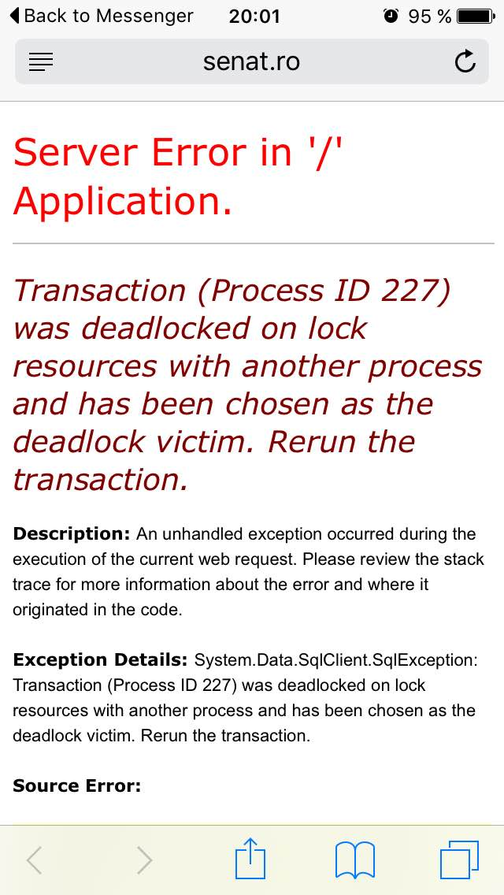

Mulțumesc.org este un proiect non-profit dezvoltat de un grup de tineri profesioniști care își propune să aducă mai multă transparență în viața politică a României, pornind de la fapte obiective și măsurabile, nu de la impresii, interese și scandal. Ca un prim pas, ne dorim să aducem vizibilitate asupra activității forului legislativ, prin a informa publicul asupra gradului de implicare a fiecărui deputat și a fiecărui partid în activitatea legislativă și prin a face mai facilă identificarea de către orice cetățean a deputatului care îl reprezintă în Camera Deputaților.
Fără pretenția că o singură măsură poate surprinde complexitatea politicii, considerăm totuși că prezența deputaților și senatorilor este o primă condiție necesară (chiar dacă insuficientă) pentru a demonstra implicare, interes, poate chiar devotament pentru alegători și pentru țară.
Mai bine de trei sfeturi din români nu au absolut niciun fel de încredere în Parlament sau în activitatea lui. Vrem să îmbunătățim această situație prin a crea o punte de responsabilitate între fiecare deputat și cetățenii din circumscripția pe care o reprezintă. Astfel, fiecare cetățean interesat, folosind Mulțumesc.org, poate afla cu ușurință după județul și strada de reședință care e deputatul care îl reprezintă, împreuna cu datele de contact ale biroului/birourilor acelui deputat. Pentru fiecare deputat prezentăm statistici de prezență saptămânale, lunare, trimestriale, anuale și per mandat - astfel încât cetățenii să poate urmări în mod facil gradul de implicare al reprezentantului lor.
Considerăm că este importantă începerea unui dialog între cetățeni și reprezentanți. Ne încurajăm utlizatorii și dealtfel toți cetățenii să își contacteze reprezentantul în legatură cu îngrijorările, problemele și doleanțele sale legitime în ceea ce privește procesul legislativ, inițiativele, activitatea și prezența acelui deputat. De asemenea, îndemnăm utilizatorii la răbdare și la înțelegere în cazul în care nu vor primi un răspuns sau nu vor primi un răspuns imediat - întrucât fiecare deputat reprezintă peste 150.000 de cetățeni.
Prin parcurgerea automată și interpretarea computerizată a datelor public disponibile pe site-ul Camerei Deputaților, site-ul nostru calculează gradul de absență al fiecărui deputat și al fiecărui partid, în diverse perioade de timp (saptămânal, pe ultima lună, pe ultimul trimestru, pe ultimul an sau pe tot mandatul). Statisticile noastre nu sunt afectate de eroarea sau subiectivismul unui operator uman întrucât sunt realizate de către un algoritm, pentru a garanta corectitudinea și imparțialitatea rezultatelor.
Spre deosebire de datele prezente pe site-ul forului legislativ, unde pentru fiecare pereche deputat-element de pe ordinea de zi a plenului este notată starea DA, NU, ABȚINERE, ABSENT - datele prezentate pe site-ul nostru prezintă procentul de elemente la care deputatul a votat DA, NU sau ABȚINERE (adică a fost prezent). Prin aceasta, noi și dumneavoastră putem observa în ce măsură procentuală respectivul deputat, de-a lungul timpul, fost prezent și suficient de atent/interesat pentru a-și exprima votul sau respectiv a fost absent.
Statisticile pe care algoritmul nostru le calculează, ca și însăși procesul democratic, se bazează pe corectitudinea și integritatea informațiilor disponibile pe site-ul Camerei Deputaților. Potențiale erori sau omisiuni din datele prezentate pe site-ul lor se vor reflecta în incorectitudini ale statisticilor noastre. Corectarea datelor la sursa va produce corectarea statisticilor prezentate, întrucât algoritmul nostru reevaluează periodic (saptămânal sau mai des) datele.
În ciuda celor mai sincere intenții ale noastre și a eforturilor noastre de a testa și valida funcționarea corectă a algoritmului, există posibilitatea să existe erori minore în interpretarea datelor. Dacă observați vreo astfel de eroare, omisiune sau orice altă neconcordanță cu datele prezentate pe site-ul Camerei Deputaților, vă rugăm să ne atrageți atenția pentru a face modificările necesare corectării deîndată.
Pentru ca suntem ironici. Și credem că mulți dintre reprezentații noștrii merită orice altceva în afara de mulțumiri.
Pe de altă parte, credem că există și deputați implicați, activi și dedicați în forul legislativ. Și vrem să tragem linia între bun și rău, activ și pasiv, implicat și indiferent folosind ceva mai concret decât zvonuri, bârfe, scandaluri, păreri și idei. Vrem să distingem reprezentații care merită încrederea noastră folosind datele clare și fapte obiective - în speță când au votat și când nu le-a păsat.
Poate în cel mai important rând: credem că responsabilizarea și dialogul sunt drumul către îmbunătățirea interesului și eficienței în forul legislativ. Nu vrem să mai punem eticheta generală ”deputații sunt leneși”, ”deputații sunt chiulangii”, ”deputații sunt dezinteresați”. Vrem să vedem și să arătam clar numele celor care și-au meritat aceste etichete. Vrem să spunem ”Deputatul X are o rată de prezență de 30%, nu mai merită votul meu”. Vrem să spunem ”Deputatul Y are o prezență de 60%, poate ar trebui să îi scriu un mail sau o scrisoare și să-i transmit că pentru mine ar fi important să fie acolo pentru mine 90% din timp”. Vrem să spunem ”Deputatul Z măcar s-a dus acolo în 86% din situații, poate el/ea chiar merită mulțumiri”.
Și vrem să vă ajutăm și pe dumneavoastră, utilizatori și cetățeni, să faceți aceste distincții între deputați care merită și deputați care nu merită.
În profilele deputaților, puteți găsi adresele de contact ale birourilor lor, așa că, folosind datele pe care vi le punem la dispoziție puteți să alegeți dacă, atunci când le veți scrie, veți folosi sau nu cuvântul ”mulțumesc”.
Mă numesc Bogdan Bocșe și sunt inițiatorul acestui proiect. poți găsi mai multe informații despre mine pe LinkedIn și pe blog-ul meu. Restul contribuitorilor doresc să rămână anonimi.
Suntem un grup de tineri profesioniști, cu specilizare în IT și în managementul serviciilor, fără afiliere politică și fără interese conexe, care consideră că gradul de transparență al activității forului legislativ poate fi mărit și că responsabilizarea fiecărui deputat în parte va duce, în timp, la îmbunătățirea procesului democratic și a mersului lucrurilor în România.
Nu dorim să discutăm opinii politice, nu căutăm și nu acceptăm sponsorizări cu scop sau interes direct sau indirect politic, nu reprezentăm interesele niciunui partid, demnitar sau politician și nu dorim să facem asta.
Dorim să ne păstrăm obiectivitatea, imparțialitatea pentru a putea oferi date clare, certe, nediscutabile care să faciliteze transparentizarea procesului democratic.
Deși considerăm statisticile legate de prezența în Camera Deputaților ca un bun prin de pornire pentru a urmări consecvența și implicarea reprezentaților noștri în procesul legislativ, dorim să extindem setul de analize pe care le facem și informațiile pe care le vom pune la dispoziție în viitor. În acest scop, vom folosi exclusiv algoritmi automați de analiză, statistică, interpretare a limbajului natural, care să garanteze neimixtiunea subiectivismului uman în rezultatul final, precum și eliminarea sau reducerea gradului de eroare. Mai mult, vom folosi ca surse doar acele date și fapte puse la dispoziția publicului, în mod transparent și legal, de către oricare dintre forurile legislativ, executiv și/sau judecătoresc.
Nu vom folosi opinii, interpretări al jurnaliștilor sau analiștilor, articole din ziare, reviste sau alte publicații.
Metodele și algoritmii pentru evaluarea și calcularea gradului de absență al senatorilor sunt similare, motiv pentru care metoda ar putea fi cu ușurință aplicată și pentru analiza datelor disponibile pe site-ul Senatului.
Din nefericire însă, modul defectuos de realizare al site-ului face ca acesta să afișeze un mesaj de eroare atunci când primește două, trei sau mai multe cereri concomitente de accesare a unei pagini din site (explicația tehnică este disponibilă mai jos, pentru cine este interesat). Pentru cei mai puțin familiarizați cu aspectele tehnice, puteți lua în calcul că site-ul Camerei Deputaților poate răspunde la 25-30 de cereri de pagină concomitente fără nicio eroare sau dificultate, iar un site modern poate răspunde la mii, zeci de mii sau chiar sute de mii de cereri de pagină concomitent (în paralel).
Pentru analiza activității senatorilor pe întregul mandat ar fi necesare aproximativ 150,000-250,000 cereri între computerul nostru și cel de la Senat (o cerere de pagina pentru fiecare senator pentru fiecare zi din ultimii 3-4 ani). Cu o durată medie de răspuns de 1 secundă per cerere, procesul de analiză ar dura 60-70 de ore, timp în care accesul altor utilizatori la site-ul Senatului ar putea fi îngreunat sau poate chiar oprit. Nu dorim să producem această situație neplăcută pentru alți cetățeni sau utilizatori, motiv pentru care momentan nu vom rula această analiză. Am semnalat deja neajunsul și lipsa de performanță a site-ului lor către echipa de IT de la Senat. Studiem în paralel posibilitatea de a obține datele într-un fel în care să nu afectăm funcționarea site-ul.
Dacă doriți să vedeți aceste statistici și pentru Senat, vă rugăm să ne ajutați: scrieți echipei de la Senat să facă posibil acest lucru prin remedierea lipsei de performanță a site-ului lor, permițându-ne astfel să accesăm datele necesare într-un mod eficient, rapid, care să nu priveze alți utilizatori de funcționalitatea site-ului.
Detalierea tehnică a lipsei de performanță a site-ului Senat.ro:
Pentru fiecare accesare a paginii, serverul de aplicație accesează baza de date făcând mai multe operații de lock (barieră de access exclusiv) asupra datelor, cu o granularitate foarte mare (probabil table lock sau ceva similar). Este de notat că lock-ul nu este necesar în cazul operațiunilor de citire, ci doar în cazul operațiunilor de scriere (astfel încât scrierile de date să nu se suprapună în mod nedorit).
Problema site-ului Senat.ro se manifestă atunci când există două, trei sau mai multe cereri în paralel. Operațiile de lock făcute se interpun, creând situația unui dead lock (blocaj între bariere de access exclusiv interdependente). Serverul de aplicație este forțat să respingă/refuze majoritatea cererilor primite concomitent (în general refuzând toate mai puțin una dintre cererile făcute concomitent) pentru a debloca lock-urile interdependente.
Pentru servirea datelor pe un site, nu este necesară folosirea lock-urilor, pentru că utilizatorii publici nu pot modifica/scrie date în site - ceea ce face lock-urile nenecesare. Eliminarea lock-urilor în acest caz ar rezolva problema. Suplimentar, ținând cont ca datele se modifică relativ rar (poate de câteva ori pe zi), performanța site-ul ar putea fi și mai mult îmbunătățită de un sistem de caching la nivel de pagină sau la nivel de bază de date, ceea ce ar degreva operațiile realizate de server și ar produce timp de răspuns mai buni.

Dacă echipa tehnică de la Senat va avea nevoie de ajutor în rezolvarea acestei probleme, vom oferi acest ajutor în întreaga măsură a competențelor noastre.
Pentru a asigura un nivel cât mai mare de transparență a algoritmului de calcul a statisticilor și pentru a evita confuziile vrem să facem următoarele precizări: